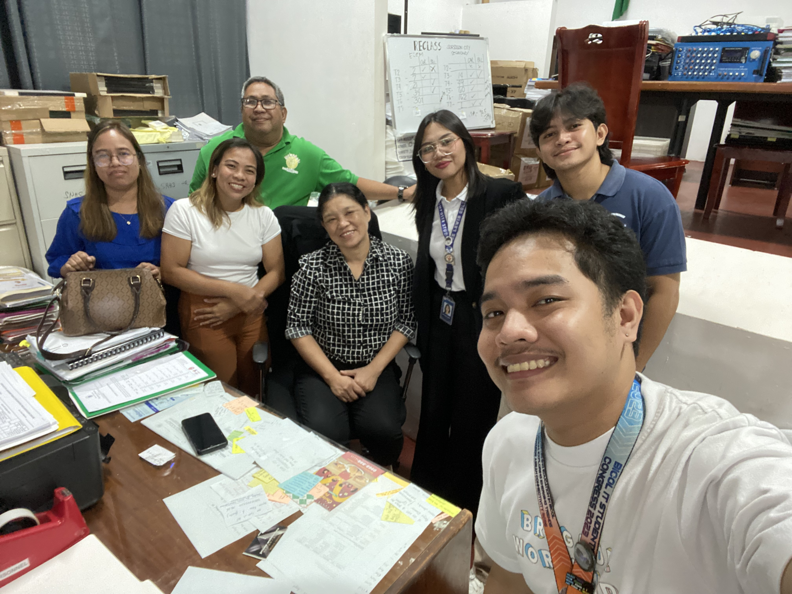
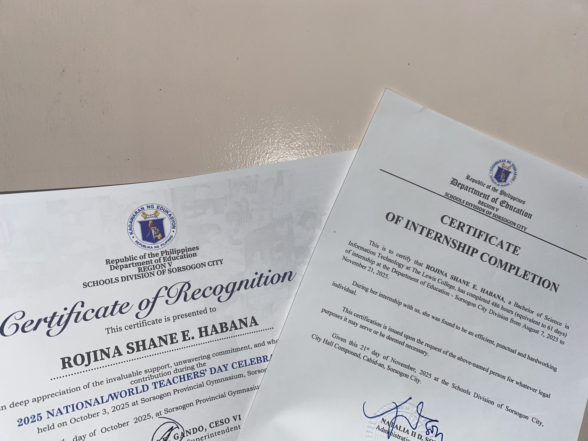
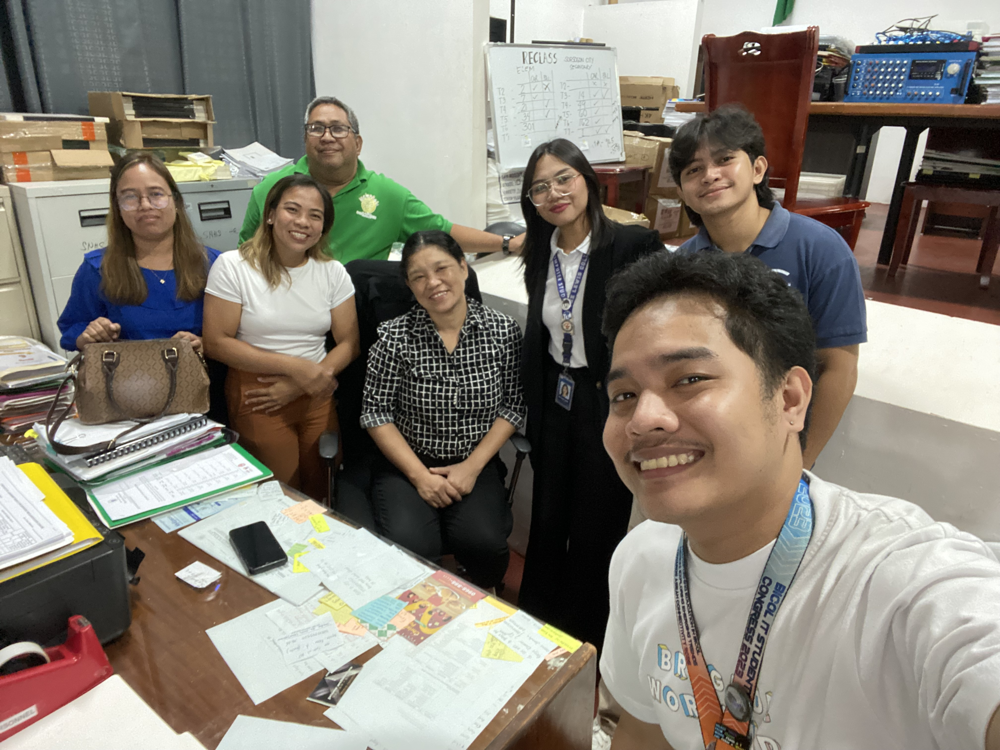
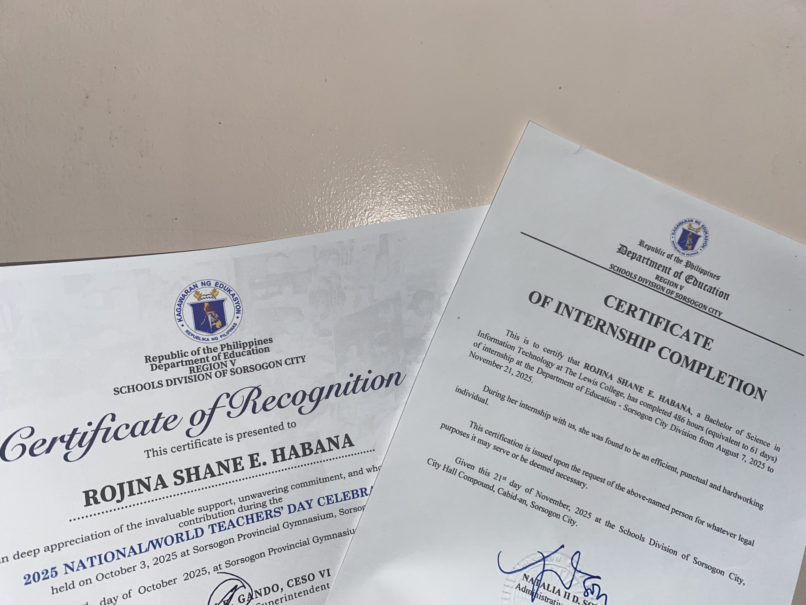

To protect and promote the right of every Filipino to quality, equitable, culture-based, and complete basic education where:
• Students learn in a child-friendly, gender-sensitive, safe, and motivating environment.
• Teachers facilitate learning and constantly nurture every learner.
• Administrators and staff ensure an enabling and supportive environment.
• Family, community, and stakeholders share responsibility for developing life-long learners.
We dream of Filipinos who passionately love their country and whose values and competencies enable them to realize their full potential and contribute meaningfully to building the nation.
As a learner-centered public institution, the Department of Education continuously improves itself to better serve stakeholders.
Maka-Diyos, Maka-Tao, Makakalikasan, at Makabansa
During our internship, we engaged in various tasks that strengthened our skills and understanding of office operations. We assisted in IT support, document digitization, and collaborated with different departments to ensure smooth workflow.
This experience allowed us to apply our academic knowledge in real-world scenarios, learn from professionals, and understand the importance of teamwork and dedication.


 


